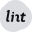

<header>
    <div class="container">
        <div class="flex-row">
            <div class="logo">
                
                <span>Media Log</span>
            </div>
            <div class="flex-row">
                <div id="bar" class="prev"></div>
                <div id="bar" class="next"></div>
            </div>
        </div>
    </div>
</header>

<main>
    <div class="container">
        <div class="carousel">
            {% for post in site.posts limit: 4 %}
            <div class="recent-post">
                <div class="thumbnail" style="background-image: url('{{ post.thumbnail }}');">
                    <div class="chips">
                        <span class="chip">{{ post.category | capitalize }}</span>
                        <span class="chip">{{ post.date | date: "%Y" }}</span>
                    </div>
                </div>
                <span>{{ post.genre }}</span>
                <h1>{{ post.title }}</h1>
                <div class="icons">
                    <!-- <div class="icon icon__view"></div> -->
                    <a href="{{ post.external-link }}" target="_blank" rel="noopener">
                        <div class="icon icon__link"></div>
                    </a>
                </div>
            </div>
            {% endfor %}
        </div>
    </div>
</main>

<section class="container">
    <div class="category-filters">
        <button id="All" onclick="filterUsingCategory('All')">
            *Show All Posts*
        </button>
        {% assign categories = site.categories | sort %}
        {% for category in categories %}
        {% assign cat = category | first %}
        <button id="{{ cat }}" onclick="filterUsingCategory(this.id)">
            {{ cat }}
        </button>
        {% endfor %}
    </div>
    <div class="posts-list">
        {% assign id = 0 %}
        {% for post in site.posts %}
        {% assign id = id | plus:1 %}
        <div class="post" id="{{id}}">
            <div class="post__inner">
                <div class="thumbnail" style="background-image: url('{{ post.thumbnail }}');">
                    <div class="chips">
                        <span class="chip">{{ post.category | capitalize }}</span>
                        <span class="chip">{{ post.date | date: "%Y" }}</span>
                    </div>
                </div>
                <span>{{ post.genre }}</span>
                <h2>{{ post.title }}</h2>
                <div class="icons">
                    <!-- <div class="icon icon__view"></div> -->
                    <a href="{{ post.external-link }}">
                        <div class="icon icon__link"></div>
                    </a>
                </div>
            </div>
        </div>
        {% endfor %}
    </div>
</section>

{% include footer.html %}

<script type="text/javascript">
    function filterUsingCategory(selectedCategory) {
        var id = 0;
        {% for post in site.posts %}
        var cats = {{ post.categories | jsonify
    }}

    var postDiv = document.getElementById(++id);
    postDiv.style.display = (selectedCategory == 'All' || cats.includes(selectedCategory))
        ? 'unset'
        : 'none';
    {% endfor %}
  }
</script>